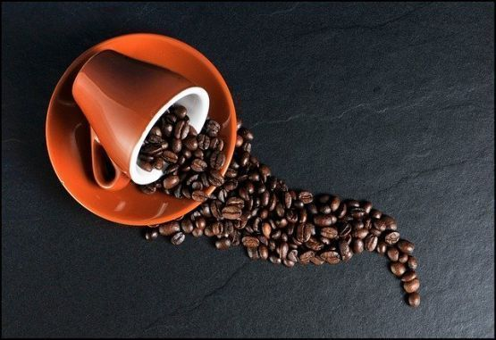
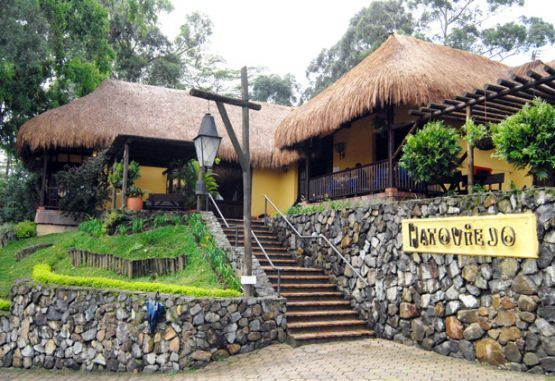
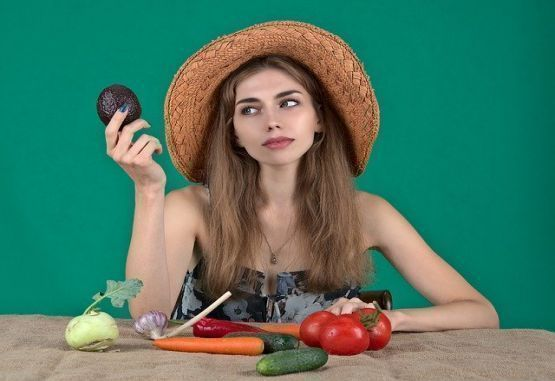

País con aroma de café
Si en el país tenemos que escoger una bebida de consumo tradicional, arraigado a costumbres y estilos de vida, tenemos que escoger el café. Mundo cocina está de fiesta celebrando el “Día Nacional del Café” y entre sorbo y sorbo le dedica las más ricas recetas de su edición especial: Café.
Leer más...Restaurantes sí, restaurantes no.
Medellín ha sido sede de uno de los grupos más organizados en el país en el tema de restaurantes. Uno de los sectores que más ha sufrido en esta contingencia por encontrarse todavía de puertas cerradas. Pero en el momento se trabaja en una propuesta de protocolo de bioseguridad.
Leer más...La cocina en mi barrio

Estar sentados a la mesa es un ritual del día a día. Es el ritual de comer juntos. Es un momento de comunicación un escenario de miradas, voces, palabras, gestos que se dan entre bocado y bocado. Y cada mesa es distinta en cada casa y en cada barrio. Un maestro en la cocina como acción social, nos lo explica
Leer más...Ni moda, ni religión… pura salud
El cuerpo físico en el ser humano tiene su historia a través de los siglos. Ha pasado de la adoración al descuido, de ser delgados a ser robustos. De la adoración de la belleza al castigo de ser feos. Y en todo esto hay dos palabras que tienen la esencia y la razón: los alimentos y comer.
Leer más...